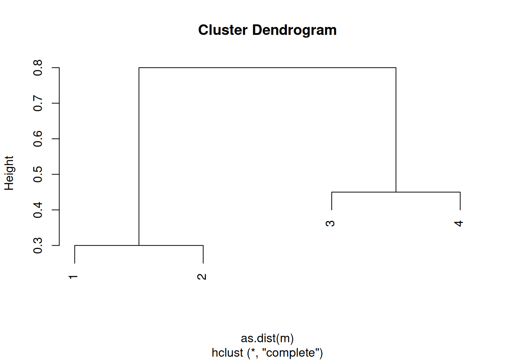
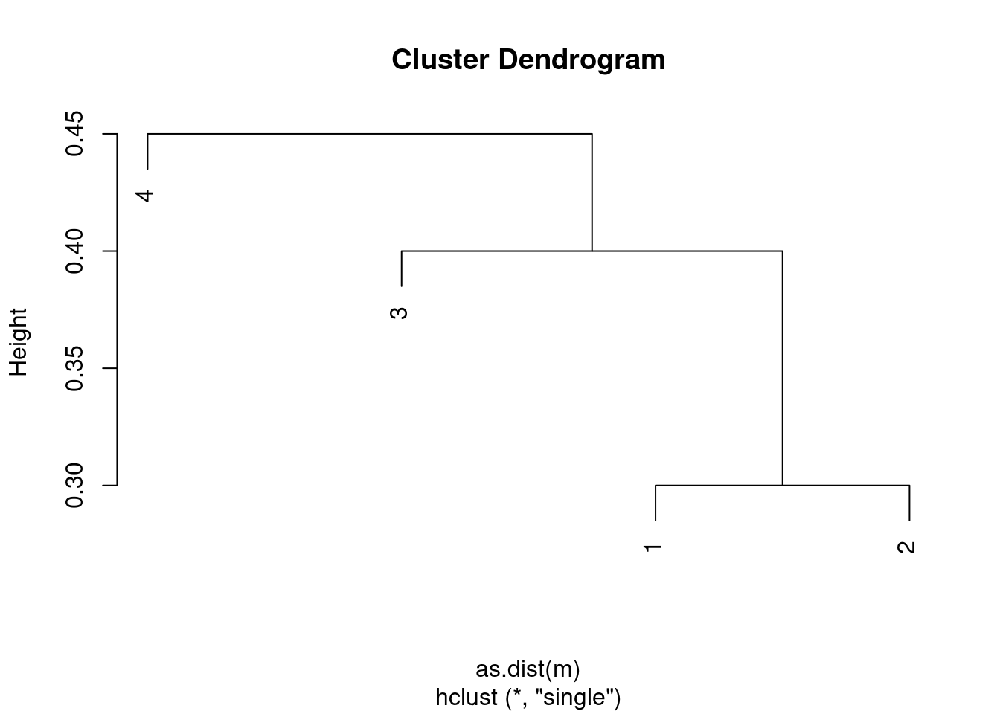
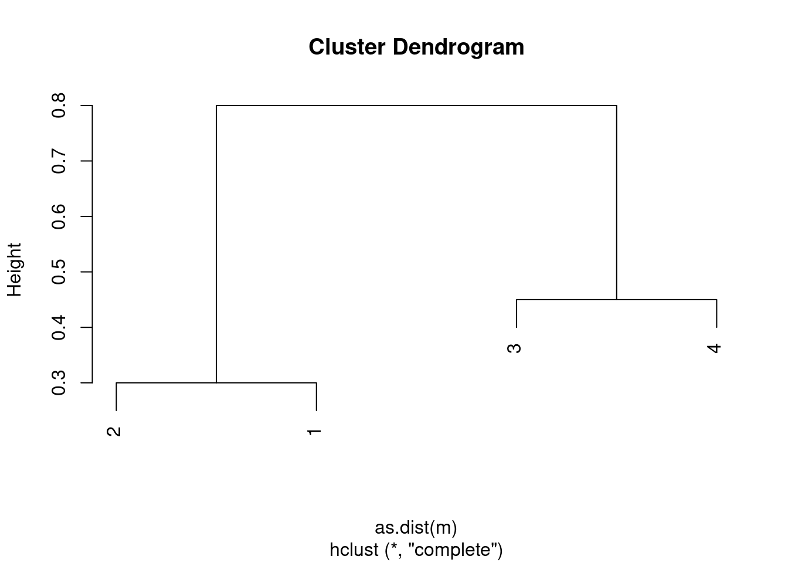
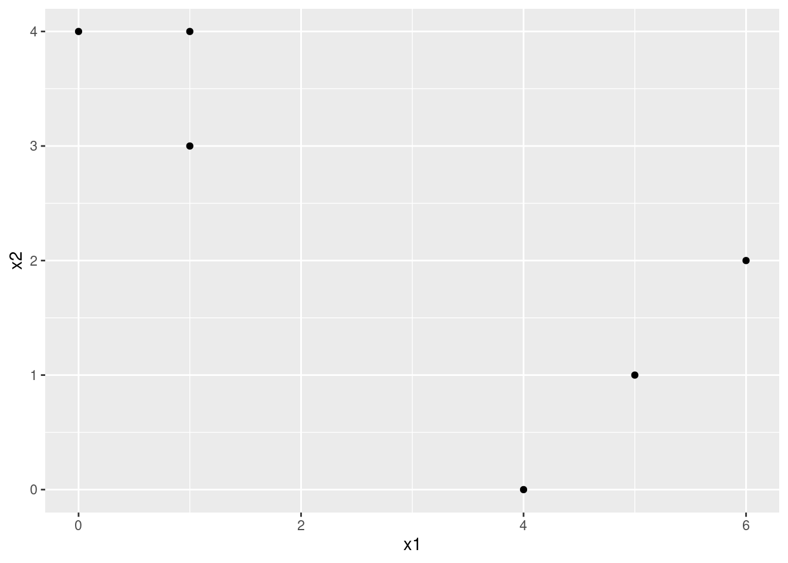
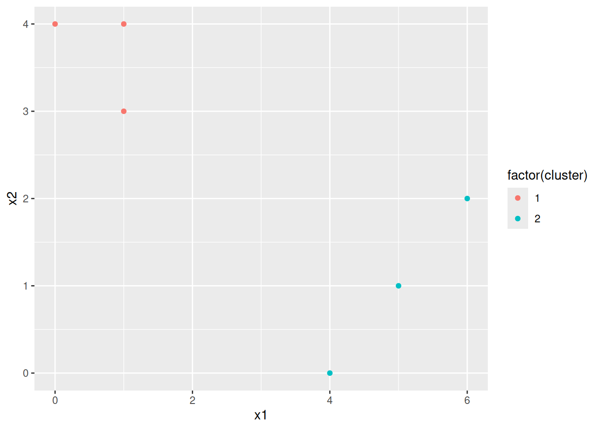
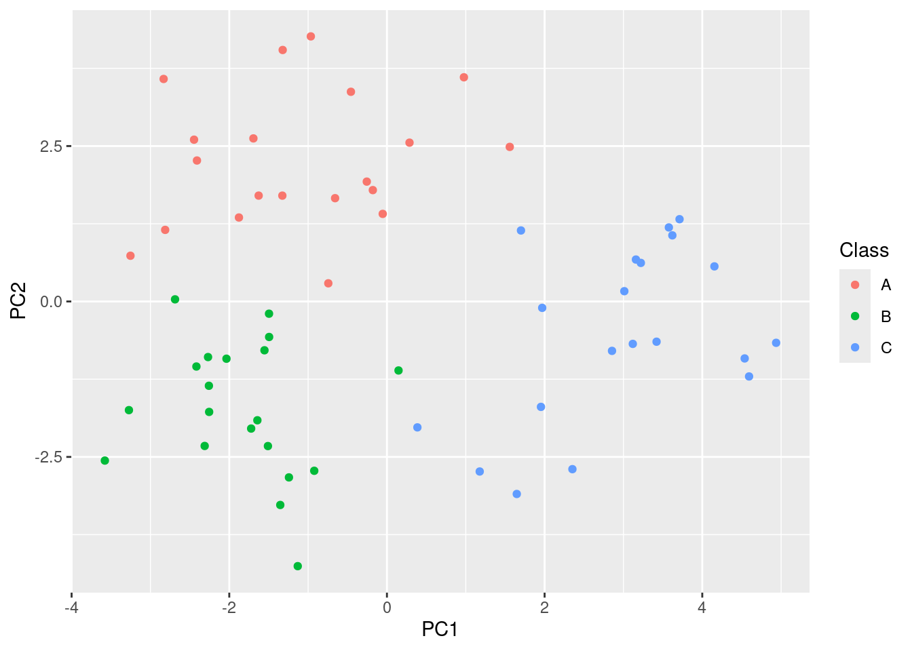
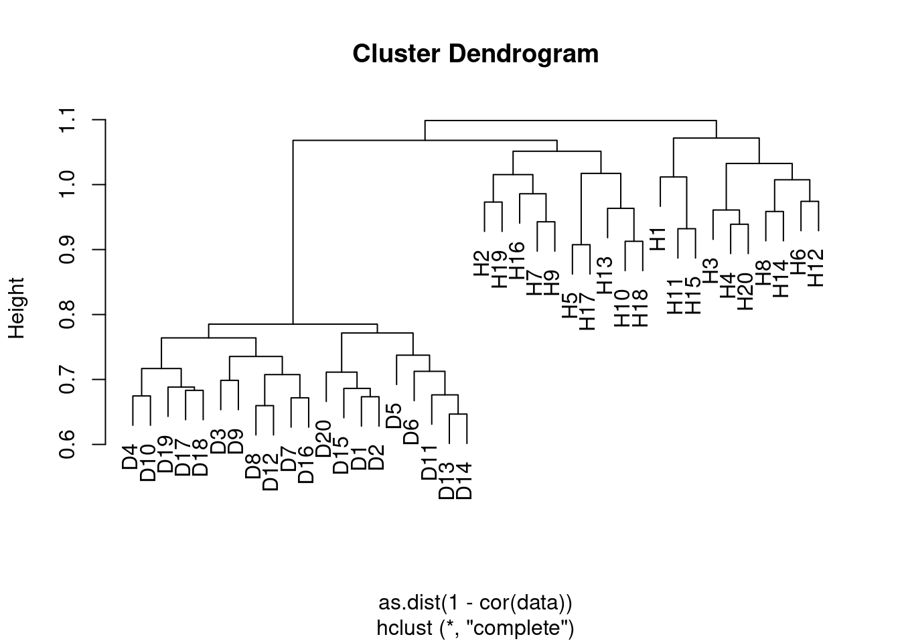
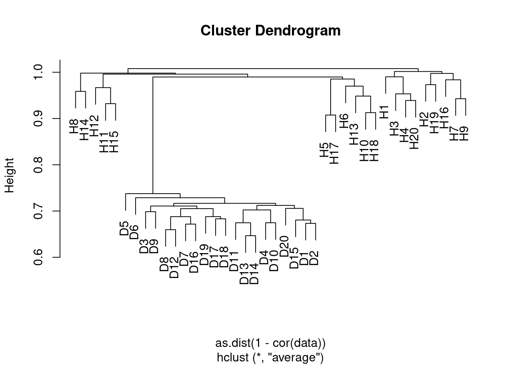

12 Unsupervised Learning
12.1 Conceptual
12.1.1 Question 1
This problem involves the \(K\)-means clustering algorithm.
- Prove (12.18).
12.18 is:
\[ \frac{1}{|C_k|}\sum_{i,i' \in C_k} \sum_{j=1}^p (x_{ij} - x_{i'j})^2 = 2 \sum_{i \in C_k} \sum_{j=1}^p (x_{ij} - \bar{x}_{kj})^2 \]
where \[\bar{x}_{kj} = \frac{1}{|C_k|}\sum_{i \in C_k} x_{ij}\]
On the left hand side we compute the difference between each observation (indexed by \(i\) and \(i'\)). In the second we compute the difference between each observation and the mean. Intuitively this identity is clear (the factor of 2 is present because we calculate the difference between each pair twice). However, to prove.
Note first that, \[\begin{align} (x_{ij} - x_{i'j})^2 = & ((x_{ij} - \bar{x}_{kj}) - (x_{i'j} - \bar{x}_{kj}))^2 \\ = & (x_{ij} - \bar{x}_{kj})^2 - 2(x_{ij} - \bar{x}_{kj})(x_{i'j} - \bar{x}_{kj}) + (x_{i'j} - \bar{x}_{kj})^2 \end{align}\]
Note that the first term is independent of \(i'\) and the last is independent of \(i\).
Therefore, 10.12 can be written as:
\[\begin{align} \frac{1}{|C_k|}\sum_{i,i' \in C_k} \sum_{j=1}^p (x_{ij} - x_{i'j})^2 = & \frac{1}{|C_k|}\sum_{i,i' \in C_k}\sum_{j=1}^p (x_{ij} - \bar{x}_{kj})^2 - \frac{1}{|C_k|}\sum_{i,i' \in C_k}\sum_{j=1}^p 2(x_{ij} - \bar{x}_{kj})(x_{i'j} - \bar{x}_{kj}) + \frac{1}{|C_k|}\sum_{i,i' \in C_k}\sum_{j=1}^p (x_{i'j} - \bar{x}_{kj})^2 \\ = & \frac{|C_k|}{|C_k|}\sum_{i \in C_k}\sum_{j=1}^p (x_{ij} - \bar{x}_{kj})^2 - \frac{2}{|C_k|}\sum_{i,i' \in C_k}\sum_{j=1}^p (x_{ij} - \bar{x}_{kj})(x_{i'j} - \bar{x}_{kj}) + \frac{|C_k|}{|C_k|}\sum_{i \in C_k}\sum_{j=1}^p (x_{ij} - \bar{x}_{kj})^2 \\ = & 2 \sum_{i \in C_k}\sum_{j=1}^p (x_{ij} - \bar{x}_{kj})^2 \end{align}\]
Note that we can drop the term containing \((x_{ij} - \bar{x}_{kj})(x_{i'j} - \bar{x}_{kj})\) since this is 0 when summed over combinations of \(i\) and \(i'\) for a given \(j\).
- On the basis of this identity, argue that the \(K\)-means clustering algorithm (Algorithm 12.2) decreases the objective (12.17) at each iteration.
Equation 10.12 demonstrates that the euclidean distance between each possible pair of samples can be related to the difference from each sample to the mean of the cluster. The K-means algorithm works by minimizing the euclidean distance to each centroid, thus also minimizes the within-cluster variance.
12.1.2 Question 2
Suppose that we have four observations, for which we compute a dissimilarity matrix, given by
\[\begin{bmatrix} & 0.3 & 0.4 & 0.7 \\ 0.3 & & 0.5 & 0.8 \\ 0.4 & 0.5 & & 0.45 \\ 0.7 & 0.8 & 0.45 & \\ \end{bmatrix}\]For instance, the dissimilarity between the first and second observations is 0.3, and the dissimilarity between the second and fourth observations is 0.8.
- On the basis of this dissimilarity matrix, sketch the dendrogram that results from hierarchically clustering these four observations using complete linkage. Be sure to indicate on the plot the height at which each fusion occurs, as well as the observations corresponding to each leaf in the dendrogram.
m <- matrix(c(0, 0.3, 0.4, 0.7, 0.3, 0, 0.5, 0.8, 0.4, 0.5, 0., 0.45, 0.7, 0.8, 0.45, 0), ncol = 4)
c1 <- hclust(as.dist(m), method = "complete")
plot(c1)
- Repeat (a), this time using single linkage clustering.
c2 <- hclust(as.dist(m), method = "single")
plot(c2)
- Suppose that we cut the dendrogram obtained in (a) such that two clusters result. Which observations are in each cluster?
table(1:4, cutree(c1, 2))##
## 1 2
## 1 1 0
## 2 1 0
## 3 0 1
## 4 0 1
- Suppose that we cut the dendrogram obtained in (b) such that two clusters result. Which observations are in each cluster?
table(1:4, cutree(c2, 2))##
## 1 2
## 1 1 0
## 2 1 0
## 3 1 0
## 4 0 1
- It is mentioned in the chapter that at each fusion in the dendrogram, the position of the two clusters being fused can be swapped without changing the meaning of the dendrogram. Draw a dendrogram that is equivalent to the dendrogram in (a), for which two or more of the leaves are repositioned, but for which the meaning of the dendrogram is the same.
plot(c1, labels = c(2, 1, 3, 4))
12.1.3 Question 3
In this problem, you will perform \(K\)-means clustering manually, with \(K = 2\), on a small example with \(n = 6\) observations and \(p = 2\) features. The observations are as follows.
Obs. \(X_1\) \(X_2\) 1 1 4 2 1 3 3 0 4 4 5 1 5 6 2 6 4 0
- Plot the observations.
library(ggplot2)
d <- data.frame(
x1 = c(1, 1, 0, 5, 6, 4),
x2 = c(4, 3, 4, 1, 2, 0)
)
ggplot(d, aes(x = x1, y = x2)) + geom_point()
- Randomly assign a cluster label to each observation. You can use the
sample()command inRto do this. Report the cluster labels for each observation.
set.seed(42)
d$cluster <- sample(c(1, 2), size = nrow(d), replace = TRUE)
- Compute the centroid for each cluster.
centroids <- sapply(c(1,2), function(i) colMeans(d[d$cluster == i, 1:2]))
- Assign each observation to the centroid to which it is closest, in terms of Euclidean distance. Report the cluster labels for each observation.
dist <- sapply(1:2, function(i) {
sqrt((d$x1 - centroids[1, i])^2 + (d$x2 - centroids[2, i])^2)
})
d$cluster <- apply(dist, 1, which.min)
- Repeat (c) and (d) until the answers obtained stop changing.
centroids <- sapply(c(1,2), function(i) colMeans(d[d$cluster == i, 1:2]))
dist <- sapply(1:2, function(i) {
sqrt((d$x1 - centroids[1, i])^2 + (d$x2 - centroids[2, i])^2)
})
d$cluster <- apply(dist, 1, which.min)In this case, we get stable labels after the first iteration.
- In your plot from (a), color the observations according to the cluster labels obtained.
ggplot(d, aes(x = x1, y = x2, color = factor(cluster))) + geom_point()
12.1.4 Question 4
Suppose that for a particular data set, we perform hierarchical clustering using single linkage and using complete linkage. We obtain two dendrograms.
- At a certain point on the single linkage dendrogram, the clusters {1, 2, 3} and {4, 5} fuse. On the complete linkage dendrogram, the clusters {1, 2, 3} and {4, 5} also fuse at a certain point. Which fusion will occur higher on the tree, or will they fuse at the same height, or is there not enough information to tell?
The complete linkage fusion will likely be higher in the tree since single linkage is defined as being the minimum distance between two clusters. However, there is a chance that they could be at the same height (so technically there is not enough information to tell).
- At a certain point on the single linkage dendrogram, the clusters {5} and {6} fuse. On the complete linkage dendrogram, the clusters {5} and {6} also fuse at a certain point. Which fusion will occur higher on the tree, or will they fuse at the same height, or is there not enough information to tell?
They will fuse at the same height (the algorithm for calculating distance is the same when the clusters are of size 1).
12.1.5 Question 5
In words, describe the results that you would expect if you performed \(K\)-means clustering of the eight shoppers in Figure 12.16, on the basis of their sock and computer purchases, with \(K = 2\). Give three answers, one for each of the variable scalings displayed. Explain.
In cases where variables are scaled we would expect clusters to correspond to whether or not the retainer sold a computer. In the first case (raw numbers of items sold), we would expect clusters to represent low vs high numbers of sock purchases.
To test, we can run the analysis in R:
set.seed(42)
dat <- data.frame(
socks = c(8, 11, 7, 6, 5, 6, 7, 8),
computers = c(0, 0, 0, 0, 1, 1, 1, 1)
)
kmeans(dat, 2)$cluster## [1] 1 1 2 2 2 2 2 1kmeans(scale(dat), 2)$cluster## [1] 1 1 1 1 2 2 2 2dat$computers <- dat$computers * 2000
kmeans(dat, 2)$cluster## [1] 1 1 1 1 2 2 2 212.1.6 Question 6
We saw in Section 12.2.2 that the principal component loading and score vectors provide an approximation to a matrix, in the sense of (12.5). Specifically, the principal component score and loading vectors solve the optimization problem given in (12.6).
Now, suppose that the M principal component score vectors zim, \(m = 1,...,M\), are known. Using (12.6), explain that the first \(M\) principal component loading vectors \(\phi_{jm}\), \(m = 1,...,M\), can be obtaining by performing \(M\) separate least squares linear regressions. In each regression, the principal component score vectors are the predictors, and one of the features of the data matrix is the response.
12.2 Applied
12.2.1 Question 7
In the chapter, we mentioned the use of correlation-based distance and Euclidean distance as dissimilarity measures for hierarchical clustering. It turns out that these two measures are almost equivalent: if each observation has been centered to have mean zero and standard deviation one, and if we let \(r_{ij}\) denote the correlation between the \(i\)th and \(j\)th observations, then the quantity \(1 − r_{ij}\) is proportional to the squared Euclidean distance between the ith and jth observations.
On the
USArrestsdata, show that this proportionality holds.Hint: The Euclidean distance can be calculated using the
dist()function, and correlations can be calculated using thecor()function.
dat <- t(scale(t(USArrests)))
d1 <- dist(dat)^2
d2 <- as.dist(1 - cor(t(dat)))
plot(d1, d2)
12.2.2 Question 8
In Section 12.2.3, a formula for calculating PVE was given in Equation 12.10. We also saw that the PVE can be obtained using the
sdevoutput of theprcomp()function.On the
USArrestsdata, calculate PVE in two ways:
- Using the
sdevoutput of theprcomp()function, as was done in Section 12.2.3.
pr <- prcomp(USArrests, scale = TRUE)
pr$sdev^2 / sum(pr$sdev^2)## [1] 0.62006039 0.24744129 0.08914080 0.04335752
- By applying Equation 12.10 directly. That is, use the
prcomp()function to compute the principal component loadings. Then, use those loadings in Equation 12.10 to obtain the PVE.These two approaches should give the same results.
colSums(pr$x^2) / sum(colSums(scale(USArrests)^2))## PC1 PC2 PC3 PC4
## 0.62006039 0.24744129 0.08914080 0.04335752Hint: You will only obtain the same results in (a) and (b) if the same data is used in both cases. For instance, if in (a) you performed
prcomp()using centered and scaled variables, then you must center and scale the variables before applying Equation 12.10 in (b).
12.2.3 Question 9
Consider the
USArrestsdata. We will now perform hierarchical clustering on the states.
- Using hierarchical clustering with complete linkage and Euclidean distance, cluster the states.
set.seed(42)
hc <- hclust(dist(USArrests), method = "complete")
- Cut the dendrogram at a height that results in three distinct clusters. Which states belong to which clusters?
ct <- cutree(hc, 3)
sapply(1:3, function(i) names(ct)[ct == i])## [[1]]
## [1] "Alabama" "Alaska" "Arizona" "California"
## [5] "Delaware" "Florida" "Illinois" "Louisiana"
## [9] "Maryland" "Michigan" "Mississippi" "Nevada"
## [13] "New Mexico" "New York" "North Carolina" "South Carolina"
##
## [[2]]
## [1] "Arkansas" "Colorado" "Georgia" "Massachusetts"
## [5] "Missouri" "New Jersey" "Oklahoma" "Oregon"
## [9] "Rhode Island" "Tennessee" "Texas" "Virginia"
## [13] "Washington" "Wyoming"
##
## [[3]]
## [1] "Connecticut" "Hawaii" "Idaho" "Indiana"
## [5] "Iowa" "Kansas" "Kentucky" "Maine"
## [9] "Minnesota" "Montana" "Nebraska" "New Hampshire"
## [13] "North Dakota" "Ohio" "Pennsylvania" "South Dakota"
## [17] "Utah" "Vermont" "West Virginia" "Wisconsin"
- Hierarchically cluster the states using complete linkage and Euclidean distance, after scaling the variables to have standard deviation one.
hc2 <- hclust(dist(scale(USArrests)), method = "complete")
- What effect does scaling the variables have on the hierarchical clustering obtained? In your opinion, should the variables be scaled before the inter-observation dissimilarities are computed? Provide a justification for your answer.
ct <- cutree(hc, 3)
sapply(1:3, function(i) names(ct)[ct == i])## [[1]]
## [1] "Alabama" "Alaska" "Arizona" "California"
## [5] "Delaware" "Florida" "Illinois" "Louisiana"
## [9] "Maryland" "Michigan" "Mississippi" "Nevada"
## [13] "New Mexico" "New York" "North Carolina" "South Carolina"
##
## [[2]]
## [1] "Arkansas" "Colorado" "Georgia" "Massachusetts"
## [5] "Missouri" "New Jersey" "Oklahoma" "Oregon"
## [9] "Rhode Island" "Tennessee" "Texas" "Virginia"
## [13] "Washington" "Wyoming"
##
## [[3]]
## [1] "Connecticut" "Hawaii" "Idaho" "Indiana"
## [5] "Iowa" "Kansas" "Kentucky" "Maine"
## [9] "Minnesota" "Montana" "Nebraska" "New Hampshire"
## [13] "North Dakota" "Ohio" "Pennsylvania" "South Dakota"
## [17] "Utah" "Vermont" "West Virginia" "Wisconsin"Scaling results in different clusters and the choice of whether to scale or not depends on the data in question. In this case, the variables are:
- Murder numeric Murder arrests (per 100,000)
- Assault numeric Assault arrests (per 100,000)
- UrbanPop numeric Percent urban population
- Rape numeric Rape arrests (per 100,000)
These variables are not naturally on the same unit and the units involved are somewhat arbitrary (so for example, Murder could be measured per 1 million rather than per 100,000) so in this case I would argue the data should be scaled.
12.2.4 Question 10
In this problem, you will generate simulated data, and then perform PCA and \(K\)-means clustering on the data.
Generate a simulated data set with 20 observations in each of three classes (i.e. 60 observations total), and 50 variables.
Hint: There are a number of functions in
Rthat you can use to generate data. One example is thernorm()function;runif()is another option. Be sure to add a mean shift to the observations in each class so that there are three distinct classes.
set.seed(42)
data <- matrix(rnorm(60 * 50), ncol = 50)
classes <- rep(c("A", "B", "C"), each = 20)
dimnames(data) <- list(classes, paste0("v", 1:50))
data[classes == "B", 1:10] <- data[classes == "B", 1:10] + 1.2
data[classes == "C", 5:30] <- data[classes == "C", 5:30] + 1
- Perform PCA on the 60 observations and plot the first two principal component score vectors. Use a different color to indicate the observations in each of the three classes. If the three classes appear separated in this plot, then continue on to part (c). If not, then return to part (a) and modify the simulation so that there is greater separation between the three classes. Do not continue to part (c) until the three classes show at least some separation in the first two principal component score vectors.
pca <- prcomp(data)
ggplot(data.frame(Class = classes, PC1 = pca$x[, 1], PC2 = pca$x[, 2]),
aes(x = PC1, y = PC2, col = Class)) +
geom_point()
Perform \(K\)-means clustering of the observations with \(K = 3\). How well do the clusters that you obtained in \(K\)-means clustering compare to the true class labels?
Hint: You can use the
table()function inRto compare the true class labels to the class labels obtained by clustering. Be careful how you interpret the results: \(K\)-means clustering will arbitrarily number the clusters, so you cannot simply check whether the true class labels and clustering labels are the same.
km <- kmeans(data, 3)$cluster
table(km, names(km))##
## km A B C
## 1 1 20 1
## 2 0 0 19
## 3 19 0 0\(K\)-means separates out the clusters nearly perfectly.
- Perform \(K\)-means clustering with \(K = 2\). Describe your results.
km <- kmeans(data, 2)$cluster
table(km, names(km))##
## km A B C
## 1 18 20 1
## 2 2 0 19\(K\)-means effectively defines cluster 2 to be class B, but cluster 1 is a mix of classes A and B.
- Now perform \(K\)-means clustering with \(K = 4\), and describe your results.
km <- kmeans(data, 4)$cluster
table(km, names(km))##
## km A B C
## 1 0 7 2
## 2 18 1 0
## 3 0 0 18
## 4 2 12 0\(K\)-means effectively defines cluster 1 to be class B, cluster 2 to be class A but clusters 3 and 4 are split over class C.
- Now perform \(K\)-means clustering with \(K = 3\) on the first two principal component score vectors, rather than on the raw data. That is, perform \(K\)-means clustering on the \(60 \times 2\) matrix of which the first column is the first principal component score vector, and the second column is the second principal component score vector. Comment on the results.
km <- kmeans(pca$x[, 1:2], 3)$cluster
table(km, names(km))##
## km A B C
## 1 0 20 2
## 2 20 0 0
## 3 0 0 18\(K\)-means again separates out the clusters nearly perfectly.
- Using the
scale()function, perform \(K\)-means clustering with \(K = 3\) on the data after scaling each variable to have standard deviation one. How do these results compare to those obtained in (b)? Explain.
km <- kmeans(scale(data), 3)$cluster
table(km, names(km))##
## km A B C
## 1 1 20 1
## 2 19 0 0
## 3 0 0 19\(K\)-means appears to perform less well on the scaled data in this case.
12.2.5 Question 11
Write an
Rfunction to perform matrix completion as in Algorithm 12.1, and as outlined in Section 12.5.2. In each iteration, the function should keep track of the relative error, as well as the iteration count. Iterations should continue until the relative error is small enough or until some maximum number of iterations is reached (set a default value for this maximum number). Furthermore, there should be an option to print out the progress in each iteration.Test your function on the
Bostondata. First, standardize the features to have mean zero and standard deviation one using thescale()function. Run an experiment where you randomly leave out an increasing (and nested) number of observations from 5% to 30%, in steps of 5%. Apply Algorithm 12.1 with \(M = 1,2,...,8\). Display the approximation error as a function of the fraction of observations that are missing, and the value of \(M\), averaged over 10 repetitions of the experiment.
12.2.6 Question 12
In Section 12.5.2, Algorithm 12.1 was implemented using the
svd()function. However, given the connection between thesvd()function and theprcomp()function highlighted in the lab, we could have instead implemented the algorithm usingprcomp().Write a function to implement Algorithm 12.1 that makes use of
prcomp()rather thansvd().
12.2.7 Question 13
On the book website,
www.StatLearning.com, there is a gene expression data set (Ch12Ex13.csv) that consists of 40 tissue samples with measurements on 1,000 genes. The first 20 samples are from healthy patients, while the second 20 are from a diseased group.
- Load in the data using
read.csv(). You will need to selectheader = F.
data <- read.csv("data/Ch12Ex13.csv", header = FALSE)
colnames(data) <- c(paste0("H", 1:20), paste0("D", 1:20))
- Apply hierarchical clustering to the samples using correlation-based distance, and plot the dendrogram. Do the genes separate the samples into the two groups? Do your results depend on the type of linkage used?
hc.complete <- hclust(as.dist(1 - cor(data)), method = "complete")
plot(hc.complete)
hc.complete <- hclust(as.dist(1 - cor(data)), method = "average")
plot(hc.complete)
hc.complete <- hclust(as.dist(1 - cor(data)), method = "single")
plot(hc.complete)
Yes the samples clearly separate into the two groups, although the results depend somewhat on the linkage method used. In the case of average clustering, the disease samples all fall within a subset of the healthy samples.
- Your collaborator wants to know which genes differ the most across the two groups. Suggest a way to answer this question, and apply it here.
This is probably best achieved with a supervised approach. A simple method would be to determine which genes show the most significant differences between the groups by applying a t-test to each group. We can then select those with a FDR adjusted p-value less than some given threshold (e.g. 0.05).
class <- factor(rep(c("Healthy", "Diseased"), each = 20))
pvals <- p.adjust(apply(data, 1, function(v) t.test(v ~ class)$p.value))
which(pvals < 0.05)## [1] 11 12 13 14 15 16 17 18 19 20 501 502 503 504 505 506 507 508
## [19] 509 511 512 513 514 515 516 517 519 520 521 522 523 524 525 526 527 528
## [37] 529 530 531 532 533 534 535 536 537 538 539 540 541 542 543 544 545 546
## [55] 547 548 549 550 551 552 553 554 555 556 557 558 559 560 561 562 563 564
## [73] 565 566 567 568 569 570 571 572 574 575 576 577 578 579 580 581 582 583
## [91] 584 586 587 588 589 590 591 592 593 595 596 597 598 599 600